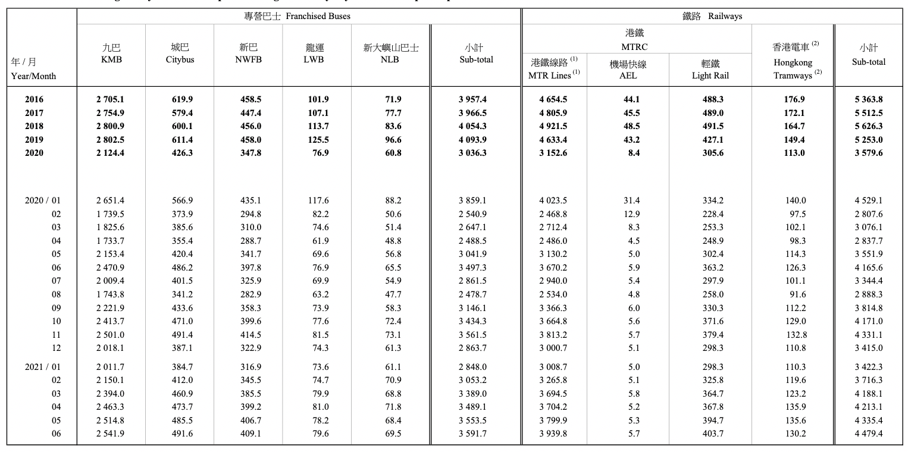
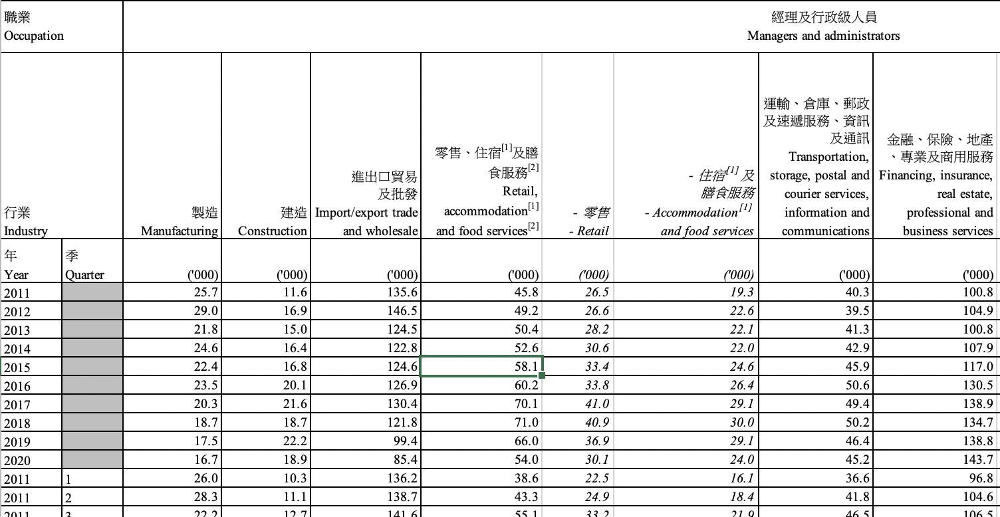
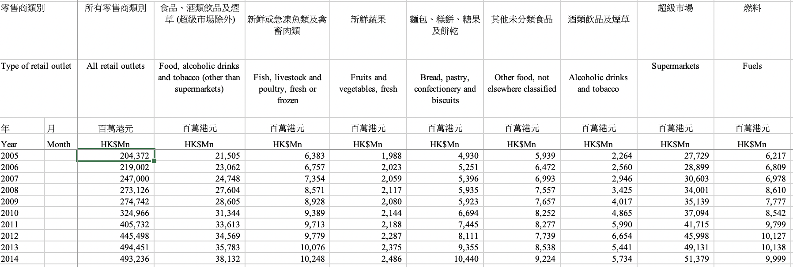
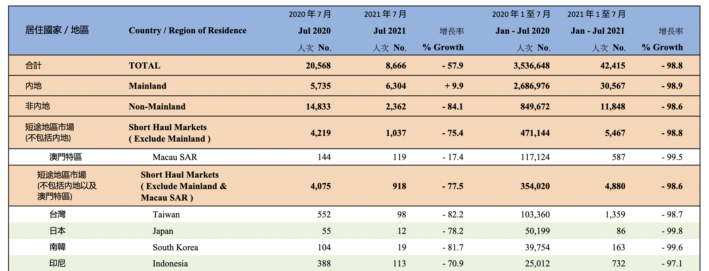
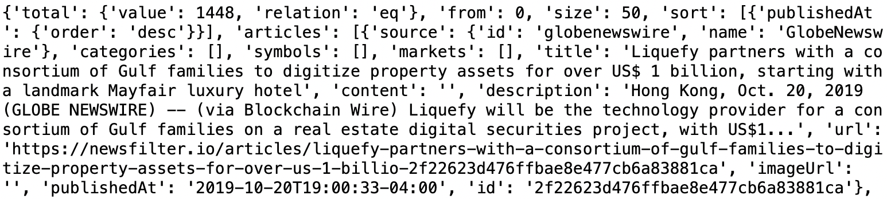
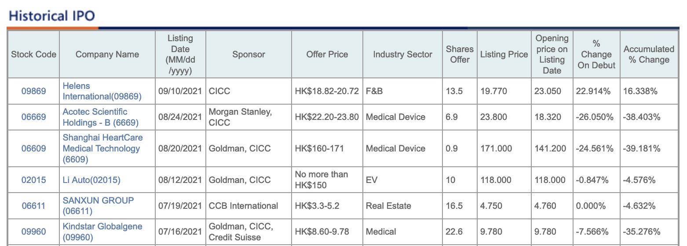
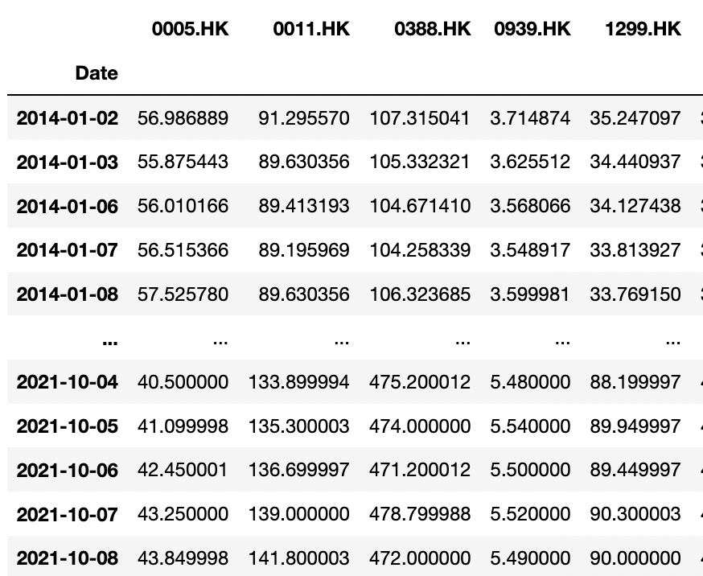
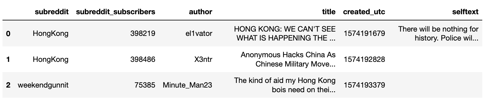
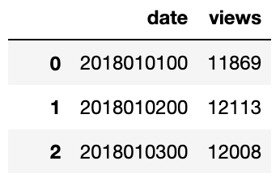
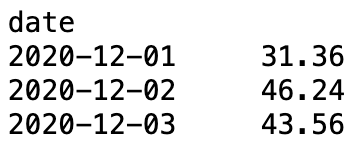

Economic Data
Transport Data
https://www.td.gov.hk/en/transport_in_hong_kong/transport_figures/monthly_traffic_and_transport_digest/index.htmlTransport Data Sample
Number of Employed Person by Industry And Occupation
https://www.censtatd.gov.hk/en/data/stat_report/product/D5250003/att/D5250003B2021QQ02B.xlsxEmployement Data Sample
Retail Sales by Type of Retail Outlet
https://www.censtatd.gov.hk/en/data/stat_report/product/D5600089/att/D5600089B2021MM07B.xlsxRetail Sales Data Sample
Tourism
https://www.discoverhongkong.com/eng/hktb/newsroom/tourism-statistics.htmlTourism Data Sample
News
For news, because this project needs historical financial news content back in 2019, it uses the platform News IO and its REST API
Data Sample
Financial Data
Hong Kong IPO Listing Data and China-Hong Kong IPO Listing Data
Data Sample
Data Sample
Online Attention
For attention, data is gathered using APIs from reddit, wikipedia and google trends.
Reddit Data Sample
Wiki Data Sample
Google Trends Data Sample
